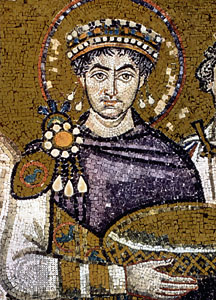

|
|
|

|
In Imperial Rome purple was seen as the color of power and authority. The status of an official could sometimes be told at a glance by the amount of purple they would wear. The emperor for instance would wear a full purple toga while a senator would be limited to a single stripe.
|
Due to the difficulty of extracting and producing it in ancient and medieval times it was associated with kings and queens of the time. This relation to wealth and fame has persisted into modern times.
Because it is a combination of blue and red it is a neutral color.
|
Works Cited
- Melina, Remy. "Why Is the Color Purple Associated With Royalty?" LiveScience. Purch, 03 June 2011. Web.
- NA. "The Color Purple and The Color Violet." Empowered By Color. NA, 23 Sept. 2017. Web.
- NA. Digital image. Britannica. N.p., 23 Sept. 2017. https://media1.britannica.com/eb-media/56/19156-004-613519AC.jpg Web.
- NA. "Purple." Wikipedia. Wikimedia Foundation, 19 Sept. 2017. Web.
|
|
Previous Page
Next Page
|